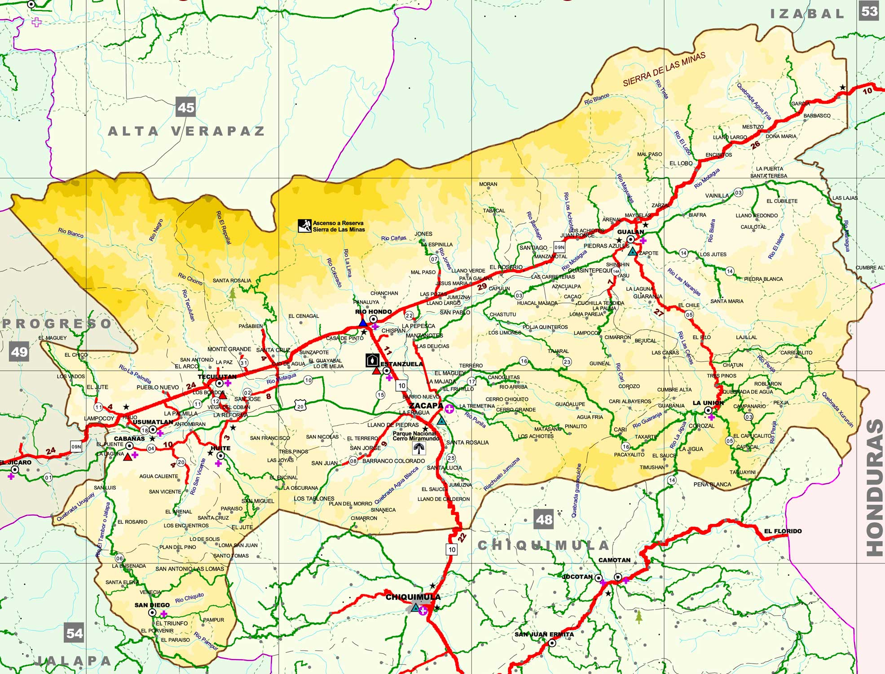

El departamento de Zacapa, ubicado en la región nororiental de Guatemala, tiene una extensión territorial de aproximadamente 2,690 kilómetros cuadrados. Limita al norte con los departamentos de Alta Verapaz e Izabal, al sur con Chiquimula y Jalapa, al este con Izabal y la República de Honduras, y al oeste con El Progreso2. Zacapa es conocido por su clima cálido y su geografía variada, que incluye montañas, valles y ríos. La cabecera departamental es la ciudad de Zacapa, que es un importante centro económico y cultural en la región.
 Regresar